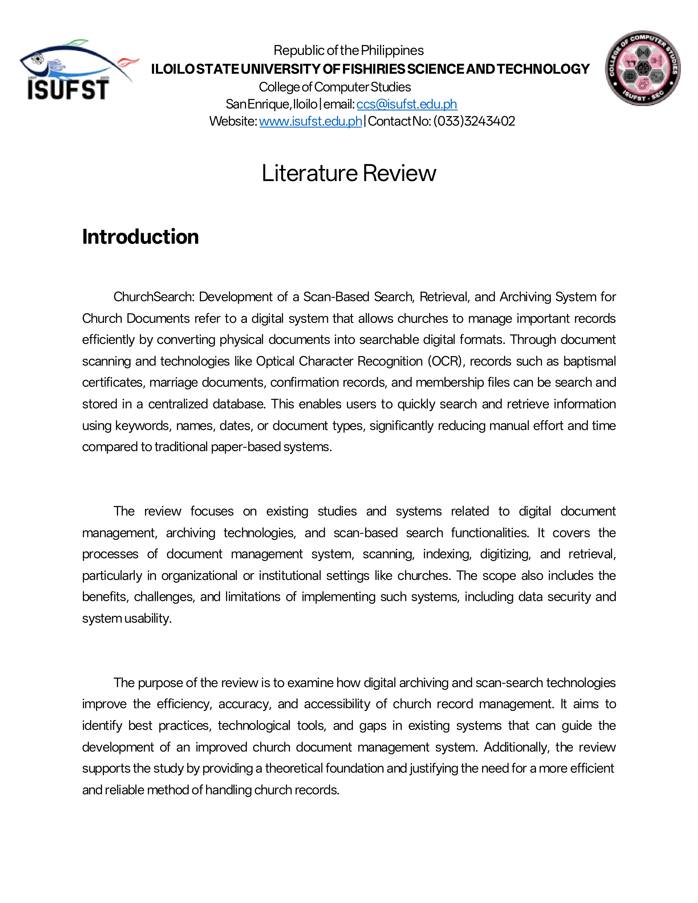
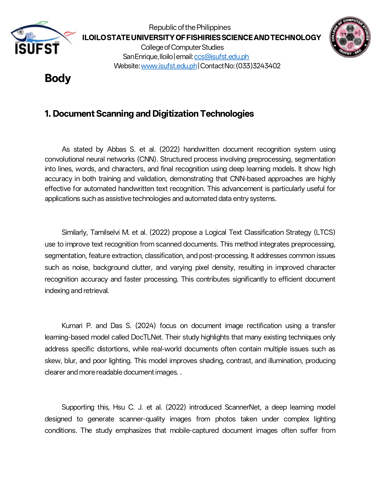
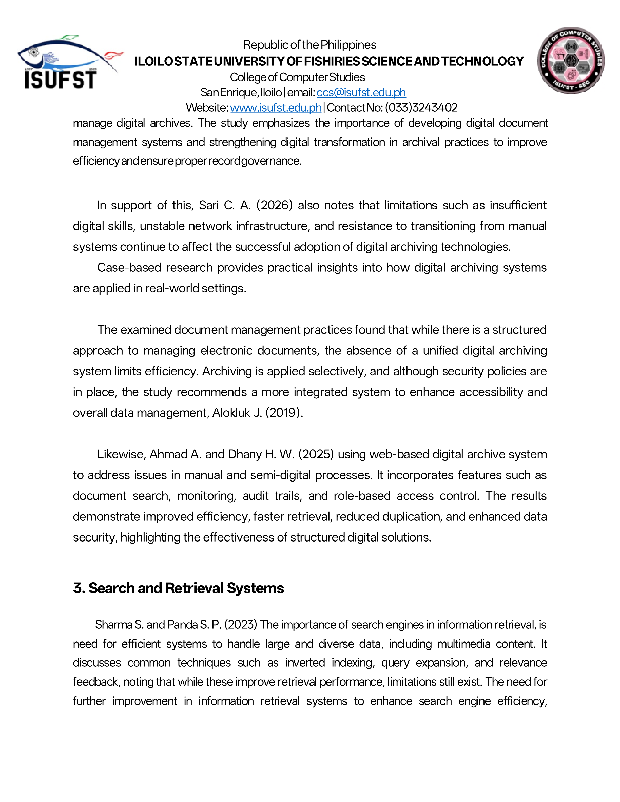
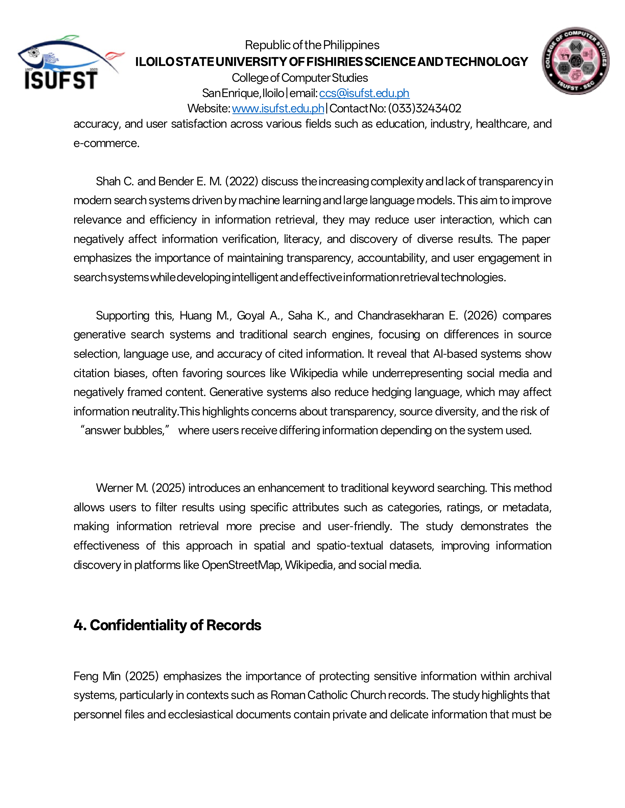
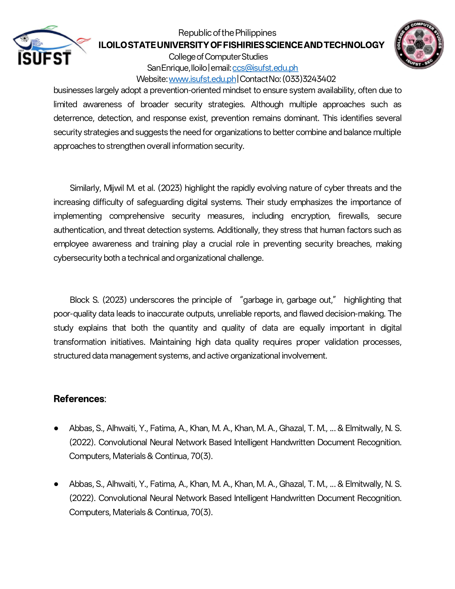
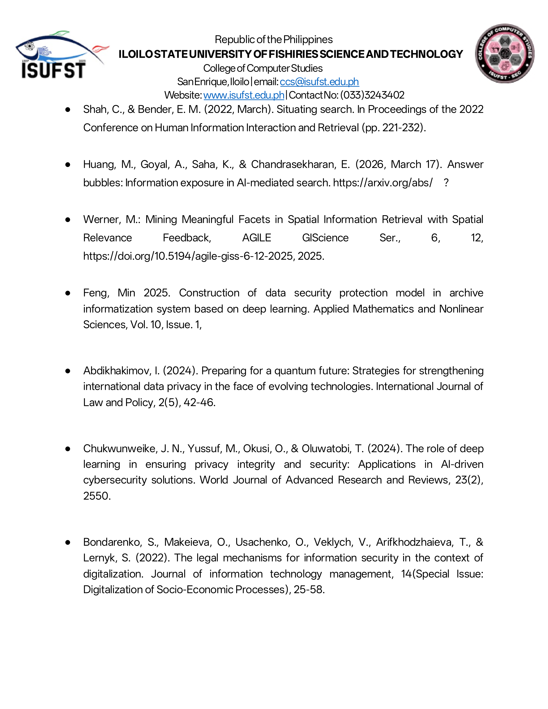
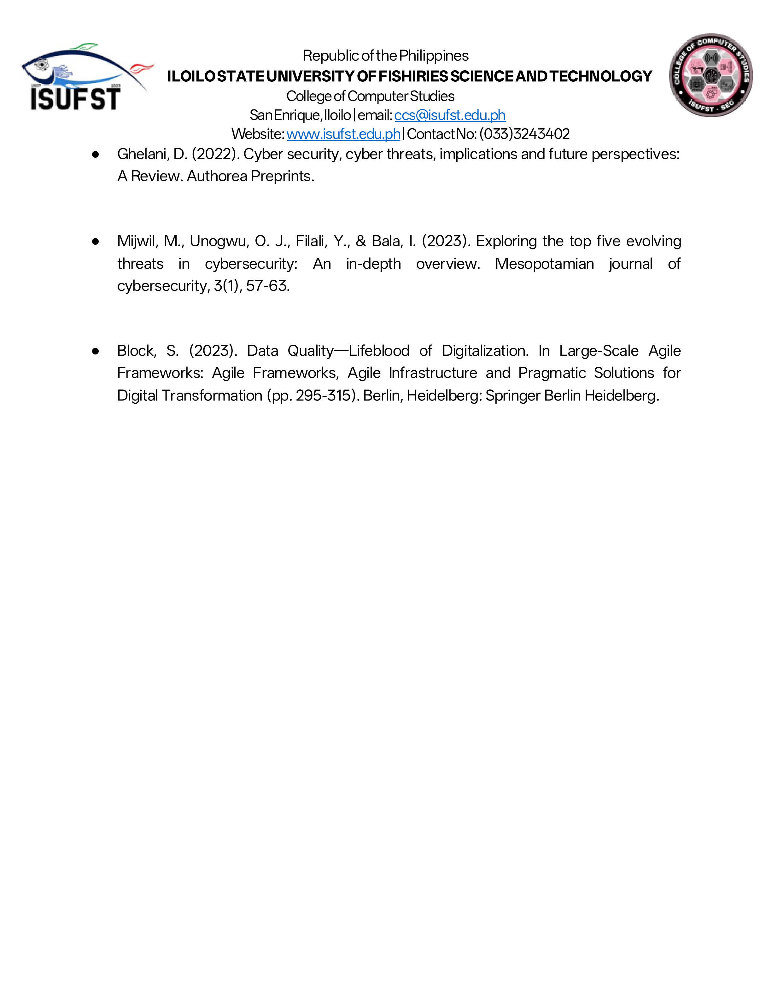

Literature Review
Our study titled Church Search is based on improving how people access and retrieve church records such as baptismal, confirmation, or marriage documents. Based on related studies and existing systems, many churches still use manual record-keeping, which makes the process slow and difficult, especially when searching for old files. Some studies show that digital systems are more efficient because they make records organized, easier to find, and more reliable compared to traditional methods. In connection to this, our proposed system aims to make the process faster and more convenient by allowing users to input their last name to quickly locate their records. In addition, we plan to enhance existing systems by adding a scanner feature, such as a QR code scanner, to make searching more modern and efficient.
Team Reflection
"Reviewing existing literature taught us that the problems we are trying to solve are widespread. We realized that many institutions struggle with manual archival systems, and our research confirmed that digital transformation is the key to reliability. By analyzing various studies, we were able to justify our plan for adding QR code scanning and searchable databases, ensuring our project is built on a solid foundation of proven technological benefits."
— The MindMesh Team
Literature Review Images

Page 1
Page 2
Page 4
Page 5 Page 7
Page 7

Page 8
Page 9
Page 10Documentation
Research Materials
Access our full Literature Review, citations of related studies, and technical research documents through our shared Google Drive folder below.
Open Google Drive Folder